Thema
Die Sonne ist noch immer voller physikalischer Geheimnisse, welche bislang nicht aufzuklären waren. Es gibt viele alternative Hypothesen, welche z.B. eine ´kalte Sonne´ unterstellen oder davon ausgehen, das Universum funktioniere rein ´elektrisch´. Das Geschehen auf und in der Sonne kann aber nicht reduziert werden auf positive und negative elektrische Ladungen oder magnetische Nord- und Südpole und deren vermeintlicher Anziehung oder Abstoßung. Das größte Hindernis für ein Verständnis der Vorgänge ist gewiss die herkömmliche Vorstellung von Schwerkraft. Der Sonne wird dabei eine ungeheure Masse (und entsprechende Dichte) zugerechnet, um das Planetensystem zusammen halten zu können. Wenn man diese unerklärliche Fernwirkung der Gravitation außer Acht lässt, eröffnen sich völlig neue Gesichtspunkte.
Hier wurde aufgezeigt, dass die Planeten nur passiv mit dem Sonnen-Whirlpool im Kreis herum driften und somit keine Anziehungskräfte erforderlich sind. Die Sonne ist eine lose Ansammlung von Gas-Partikeln im Zentrum dieses großen Äther-Wirbels. Die interne Struktur und die Bewegungsprozesse sind primär bedingt durch das Verhalten des Äthers und die ´materiellen´ Erscheinungen sind nur sekundär. Andererseits ist der Übergang fließend, weil Photonen, Elektronen und Atome nur Bewegungsmuster aus Äther im Äther sind. Mit diesem prinzipiellen Ansatz unterscheidet sich diese ´Äther-Physik der Sonne´ von Anschauungen der gängigen Physik wie anderer alternativer Theorien.
Die Grundlagen dieser Äther-Physik sind in vorigen Kapiteln ausführlich dargestellt. Dennoch müssen hier nochmals relevante Sachverhalte angesprochen werden, teilweise auch mit simplem Inhalt: was unterscheidet materielle von ätherischen Potentialwirbeln? Wie verhalten sich Gas-Partikel in einem geschlossenen System (Thermodynamik gängiger Techniken) und in einem offenen System (der Sonne)? Wie kann es trotz Energie-Konstanz zur Ausbildung kalter und warmer Zonen kommen (entgegen der Entropie)? Wie funktioniert Kern-Fusion, wenn es keine Kern-Teilchen gibt? Welche Kräfte werden freigesetzt bei einer H-Bombe, Supernova oder bei Kavitation (weit über chemische oder elektromagnetische Reaktionen hinaus)? Wann haben Sonnenflecken eine Auswirkung auf der Erde? Warum dreht die Sonne am Äquator wesentlich schneller als an den Polen? Auf diese ´heißen´ Fragen (und einige andere Phänomene) werden in diesem Kapitel ´coole´ Antworten aufgezeigt.
Luft-Potential-Wirbel
Jede kleine Windhose stellt einen Potentialwirbel aus Luft-Partikeln (und Staub) dar. Deren Entstehung ist oben in Bild 08.18.01 schematisch dargestellt. Selbst wenn keine generelle Luftbewegung gegeben ist, können sich zufällig zwei kleine Luftströmungen begegnen (siehe Pfeile bei A). Sie werden sich einrollen (bei B) und es kann daraus ein Wirbel (C) entstehen mit sehr viel intensiverer Bewegung als ursprünglich gegeben war. Charakteristisch dabei ist, dass von außen die Luft diagonal einwärts fließt. Die Dreh-Geschwindigkeit steigert sich nach innen und lediglich das Auge (dunkelblau) bildet einen starren Wirbel mit konstanter Winkelgeschwindigkeit.
In früheren Kapiteln wurde detailliert beschrieben, wie diese Selbst-Beschleunigung zustande kommt. Dem atmosphärischen Druck der weiten Umgebung steht ein geringerer seitlicher Druck (in radialer Richtung) der rotierenden Bewegung entgegen. Durch den diagonalen Zufluss wird statischer Druck zunehmend in dynamischen Strömungsdruck überführt. Allerdings können solche ´materielle´ Potentialwirbel nur so lange existieren, als axial entsprechende Luftmassen nach oben abfließen und weit außen spiralig wieder absinken können. In einem materiellen Potentialwirbels bewegen sich also Teilchen weit durch den Raum nach einem bestimmten Bewegungsmuster.
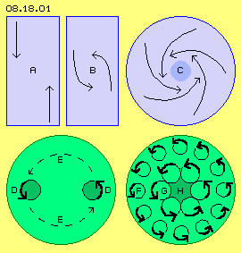
Äther-Potential-Wirbel
Analog dazu können Potentialwirbel im Äther entstehen, aber sie weisen eine grundlegend andere Charakteristik auf. Ausgangspunkt eines lokalen Ätherwirbels könnten zwei ´Störungen´ im generellen Schwingen des Äthers sein (z.B. ´zufällige Monsterwellen´ aus überlagerten Strahlungen). Diese sind hier wieder als ein kreisendes ´Schwingen mit Schlag´ skizziert (siehe Pfeil-Kreise D). Beide Schläge weisen (ebenfalls zufällig) in entgegen gesetzte Richtung. Stärker als zwischen den separaten Luft-Partikeln werden im lückenlosen Äther die Bewegungen an benachbarte Ätherpunkte weiter gereicht. Dieses entgegen gesetzte Schlagen wird entlang einer kreisförmigen Verbindungslinie zu einer gemeinsamen Bewegung (siehe gestrichelte Pfeile E).
Unten rechts im Bild ist dieses im-Kreis-herum Schwingen-mit-Schlag durch viele Pfeil-Kreise skizziert (siehe G). Auch alle benachbarten Ätherpunkte innerhalb und außerhalb davon müssen analoge Bewegungen aufweisen. Nach außen wird generell dieses Schlagen reduziert sein (hier repräsentiert durch die kleineren Pfeil-Kreise F), bis letztlich übergehend in das neutrale Schwingen des Freien Äthers der Umgebung. Analog zum materiellen Potentialwirbel kann die Intensität nach innen nicht unbegrenzt weiter gesteigert sein, so dass im Zentrum wiederum ein starrer Wirbel gegeben ist (H, dunkelgrün).
Im Gegensatz zum materiellen Potentialwirbel findet im Ätherwirbel keine weiträumige Bewegung statt. Es ist immer nur ein kleinräumiges Schwingen allen Äthers gegeben, weitgehend parallel zueinander. Im Äther existiert ein gemeinsames Schwingen, aber jeder Ätherpunkt um seinen eigenen Drehpunkt. Niemals können im lückenlosen Äther irgendwelche Äther-´Teile´ um eine gemeinsame zentrale Achse rotieren oder sich weit im Raum vorwärts bewegen (wie obige Luft-Partikel). Im Gegensatz zum materiellen Wirbel gibt es im Äther auch keinen seitlichen Zufluss und axialen Abfluss. Aber alles verhält sich immer kongruent zueinander - und darum drehen die Äther-Wirbel unaufhörlich. Obige kleine Windhose ist nur eine kurzfristige Interaktion zwischen Luft-Partikeln und der Äther ist dort nicht involviert. Die großen ´Ansammlungen von Staub´ der Sterne stellen aber langfristig und gleichförmig rotierende Massen dar und diese interagieren mit allem Äther dieser Räume. Dennoch gilt generell, dass die materiellen Bewegungen nur der sichtbare Ausdruck des unsichtbaren Ätherwirbels sind.
Äther-Whirlpools
In den Potentialwirbelwolken der Elektronen und in den Wirbelkomplexen der Atome müssen auf engem Raum alle Bewegungen synchron zueinander laufen und darum sind diese kleinen Objekte kugelförmig. Gigantisch groß sind dagegen die Whirlpools der Galaxien, der Sterne und Planeten. In diesen großen Räumen haben die Äther-Bewegungen mehr Freiheitsgrade und sie müssen keine Kugelform aufweisen. Spiral-Galaxien wie auch die Ekliptik des Sonnensystems sind relativ flache Scheiben. Der Erde-Whirlpool könnte eine linsenförmige Kontur aufweisen mit einer Stärke von nur einem Zehntel des Durchmessers. Ähnlich werden auch die Whirlpools der anderen Planeten sein. In Bild 08.18.02 sind ein Quer- und ein Längsschnitt durch einen Whirlpool schematisch gezeichnet.
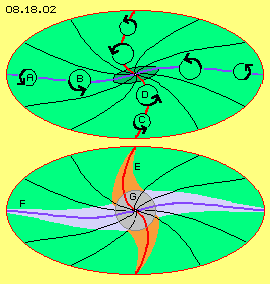
Gemeinsames Merkmal innerhalb des Whirlpools ist dieses Schlagen im Drehsinn des Systems. In den weiten Räumen sind mannigfache Ätherbewegungen möglich. Nahe zum Kern müssen die Bewegungen jedoch strenger koordiniert sein. Dies bedeutet z.B., dass einer momentanen Abwärts-Bewegung links prinzipiell eine Aufwärts-Bewegung rechts gegenüber stehen muss. Dies führt dann generell dazu, dass die äquatoriale Ebene S-förmig geschwungen ist (siehe blaue Kurve). Im Bereich dieser Beugung pendeln z.B. die geostationären Satelliten täglich etwas nördlich und südlich zum Erd-Äquator. Merkur taumelt mit seiner exzentrischen und schrägen Bahn in dieser Beugung des Ekliptik-Whirlpools.
Prinzipiell gilt im lückenlosen Äther (ohne Elastizität und mit konstanter ´Dichte´), dass der Abstand aller benachbarten Ätherpunkte konstant bleiben muss. Wenn hier die horizontale Ebene (blaue Kurve) gekrümmt ist, müssen auch oberhalb und unterhalb davon die Verbindungslinien (schwarze Kurven) prinzipiell analoge Form aufweisen, bis hin zur Systemachse (rote Kurve). Daraus resultiert, dass die Achse des zentralen Himmelskörpers immer etwas geneigt ist gegenüber der äquatorialen Ebene seines Whirlpools (z.B. der Sonne, Erde und anderer Planeten).
Prinzipiell gilt natürlich auch immer, dass die Bewegungsintensität nach außen kleiner wird, in horizontaler Ebene wie in vertikaler Richtung (siehe Pfeilkreise A - B und C - D), jeweils bis zum umgebenden Freien Äther. Entlang der vertikalen Systemachse verringert sich der Radius des Schwingens relativ einfach, wie hier durch den roten (geschwungenen) Konus E skizziert ist. Die schlagende Bewegungskomponente wird graduell schwächer von Ebene zu Ebene, so dass problemlos die Divergenz zum Freien ausgeglichen wird. Etwas schwieriger ist der Ausgleich des Schlagens in der horizontalen Ebene F. Daraus ergibt sich diese mehr flächige Form der Whirlpools (umfangreiche Details sind in früheren Kapiteln nachzulesen). In jedem Fall stellt ein Stern nur den sichtbaren Kern (G, grau) eines vielfach größeren Äther-Wirbels dar. Dieser reicht nach oben und unten weit über die Drehachse hinaus. In äquatorialer Ebene ist die Whirlpool-Scheibe nochmals weiter ausladend und partiell sichtbar in Form von Planeten. Das Primäre dieser ´himmlischen Objekte´ ist immer der Äther-Wirbel, in welchem die materiellen Partikel nur passiv driften.
Allgemeiner Ätherdruck
Bekanntlich kann eine elektromagnetische Welle hoher Frequenz ´mehr Energie transportieren´ als eine nieder-frequente. Das vorwärts-gerichtete Schlagen ergibt den Strahlungsdruck, welcher in erster Linie von der Anzahl der Schläge je Zeiteinheit abhängig ist. Oben in Bild 08.18.03 laufen zwei Wellen aufeinander zu, links mit niedriger (A, blau) und rechts mit höherer (C, rot) Frequenz. Ein Messgerät (B, grau) wird rechts einen höheren Strahlungsdruck registrieren als links.
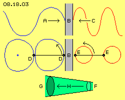
Elektromagnetische Wellen sind kreisförmiges Schwingen des Äthers, dem eine Vorwärtsbewegung aufgeprägt ist (woraus insgesamt das Bewegungsmuster spiralig vorwärts wandert). In der mittleren Zeile ist nur ´ortsfestes´ Schwingen des Äthers skizziert. Die Bahn links ergibt sich aus der Überlagerung zweier Kreisbewegungen, welche ein Schwingen mit Schlag ergibt. Diese könnte z.B. die tangentiale Bewegung eines Whirlpools sein, dessen Schlagen hier aufwärts gerichtet ist. Eingezeichnet sind zwei Ätherpunkte (D, schwarz), die parallel zueinander schwingen. Alle benachbarten Ätherpunkte dazwischen (schwarze Gerade) schwingen synchron dazu (und analog alle anderen Nachbarn).
Rechts sind zwei Ätherpunkte (E) und ihre Verbindungslinie (schwarz) eingezeichnet. Diese Ätherpunkte bewegen sich je Zeiteinheit um gleiche Distanzen vorwärts, allerdings auf engeren Bahnen. Ein Messgerät (B, grau) zwischen beiden Äther-Bewegungen wird wiederum einen höheren Druck rechts erkennen, weil dort der Äther je Zeiteinheit öfters einen Schub auf diese ´Wand´ ausübt. Wie bei elektromagnetischen Wellen ergibt höhere Frequenz auch bei ´ortsfestem´ Schwingen den höheren Schwingungs-Druck. In der entsprechenden Animation sind diese Bewegungsabläufe visualisiert.
In der unteren Zeile dieses Bildes 08.18.03 ist dieses ´Gesetz des Universellen Äther-Drucks´ noch einmal graphisch dargestellt: im Äther gibt es immer einen Druck-Gradienten (Pfeil H) vom Bereich eines engen Schwingens (F, hellgrün) zum Bereich eines weiten Schwingens (G, dunkelgrün). Das feine Schwingen auf engen Bahnen des Freien Äthers übt einen Druck aus auf das grobe Schwingen auf längeren Bahnen von Gebundenem Äther. Gleichbedeutend ist die Aussage, dass die ´chaotischen´ Bewegungen (mit kleinen und scharf gekrümmten Bahnabschnitten) des Freien Äthers einen generellen Ätherdruck ausüben auf die größeren Wirbelsysteme (mit ihren synchronen und geordneten Bewegungen auf längeren Bahnen).
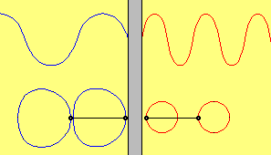
Lokale Einheiten kleiner Volumina haben eine relativ große Oberfläche, auf welche dieser Druck wirkt. Elektronen sind darum langlebige Objekte. Atome werden mit diesem enormen Druck zu Kugeln gepresst und sind darum so stabil. Der äußere Druck kann das weite Schwingen innerhalb der Einheit aber nicht eliminieren. Die ´Kompression´ geht nur so weit, bis ein Gleichgewicht erreicht ist. Es besteht um die Atome immer eine Aura ausgleichender Bewegungen und das interne Schwingungsmuster wird darin durch den umgebenden Äther-Druck konserviert.
Durch den generellen, ständigen Druck der chaotischen oder eng-räumigen Bewegung auf lokale Bereiche von geordnetem und weit-räumigem Schwingen ergibt sich der Zusammenhalt der lokalen Bewegungseinheiten - von der Größe eines Elektrons bis zur Galaxis nach gleichem Gesetz. Diese Whirlpools sind Potentialwirbel, welche nach innen immer stärkeres Schlagen auf weiträumigeren Bahnen aufweisen. Der daraus resultierende Druck-Gradient ist minimal, wirkt aber fortgesetzt auf materielle Partikel als sanfter, zentripetaler Schub. Auch große Mengen von ´Staub´ werden dadurch zu Planeten oder Sonnen zusammen geschoben.
Gravitations-Wellen oder Gravitonen
Dieser allgemeine Ätherdruck ist nicht identisch mit den ´Gravitationswellen´ einiger Schwerkraft-Hypothesen. Dort wird unterstellt, dass praktisch pausenlos irgendwo im Universum eine Supernova statt findet und darum aus allen Richtungen ´Druckwellen´ (in welchem Medium auch immer) durch den Raum rasen. Benachbarte Himmelskörper sollen sich gegenseitigen ´Druck-Schatten´ bieten und dadurch zueinander hin gedrückt werden.
Diese Hypothesen sind nicht haltbar, weil schon die Erde nur einen winzigen ´Schatten-Fleck´ auf der Sonnenoberfläche zeichnen würde. Bei den äußeren Planeten ist dieser Schattenwurf praktisch null. Zudem wird dabei nicht beachtet, dass jede Druckwelle selbstverständlich um Himmelskörper herum gebeugt würde, d.h. die Sonne könnte ihren Planeten überhaupt keinen Schatten bieten. Völlig unverständlich bleibt die Vorstellung von ´Gravitonen´, die ähnlich wie das ´Higg´s Teilchen´ irgendwelche ´Klebe-Funktionen´ ausüben sollen.
Irdische Gravitation
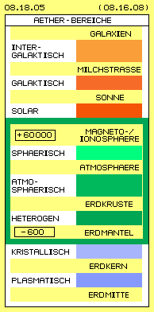
Der oben beschriebene Äther-Druck ist auch nicht identisch mit der üblichen Auffassung von Gravitation in Form einer irgendwie agierenden ´mystischen Anziehungskraft´. Man kennt vier ´Naturkräfte´ und deren Reichweite ist wirklich mysteriös: die starke Kernkraft soll auf wundersame Weise die positiv geladenen Protonen zusammen halten, aber ihr Wirkungsbereich ist auf diesen vermeintlichen Atomkern begrenzt. Egal aus wie vielen Teilchen der Kern besteht, soll eine schwache Kernkraft eine entsprechende Anzahl Elektronen auf ganz bestimmten Bahnen halten. Die dritte Natur-Kraft, die elektromagnetische Kraft ist nochmals schwächer, hat aber eine größere, wenngleich begrenzte Reichweite.
Die absolut schwächste Kraft dagegen soll unbegrenzt, d.h. universumweit wirksam sein. Trotz fiktiver Implementierung von 95 % ´dunkler Materie´ sind die Wirkungen dieser Gravitationskraft aber voller Widersprüche. In den vorigen Kapiteln habe ich klar beschrieben, wie und warum Planeten und Monde in den Äther-Whirlpools um das Wirbelzentrum driften - ohne alle Anziehungskräfte. Gerade das seltsame Verhalten der geostationären Satelliten hat diesen Erde-Äther-Wirbel und damit die reale Existenz des Äthers zweifelsfrei bewiesen.
In Kapitel 08.16. ´Wesen der Gravitation und Aufbau der Erde´ habe ich detailliert beschrieben, warum und in welch begrenztem Umfang in der nahen Umgebung der Erdoberfläche es ein ´irdisches Gravitationsfeld´ gibt. Das dortige Bild 08.16.08 ist hier als Bild 08.18.05 noch einmal dargestellt. Diese Schwerkraftwirkung gibt es in der Erdkruste nur bis maximal 600 km Tiefe und sie reicht über die Atmosphäre bis etwa zur Magnetopause, also bis maximal 60 000 km Höhe. Die Ursache ist wiederum ein Druck-Gradient im Äther, hier des Äthers zwischen den Atomen.
Schon ab der Magnetopause wird harte Strahlung heraus gefiltert, d.h. der Äther wird weniger herum gestoßen und bewegt sich zur Erde hin zunehmend ruhiger. In der Erdkruste sind diese Erschütterungen durch harte Strahlen nicht mehr gegeben. Die Atome sind dort dicht zusammen und deren weiträumiges und geordnetes Schwingen geht teilweise auch auf den Äther zwischen den Atomen über. Der Freie Äther schwingt in Gegenwart materieller Wirbelkomplexe also auf weiträumigeren Bahnen. Er nimmt praktisch eine ´grobstoffliche´ Charakteristik an, die auch über die Erdoberfläche hinaus reicht. Dieser Übergang von der engen, chaotischen Bewegung des Äthers außerhalb der Magnetopause zum etwas gröberen Schwingen zwischen den materiellen Partikeln ergibt diesen Druck-Gradienten. Und dieser wirkt wiederum als Schubkomponente auf die Bewegungsmuster materieller Partikel, in radialer Richtung zum Erdmittelpunkt.
Gravitation in Gasen
Sterne bestehen praktisch nur aus Gasen. Im Gegensatz zu Festkörpern oder Flüssigkeiten halten die Gas-Partikel tausendfach größere Distanz zueinander. Außerdem schwirren die Gas-Partikel pausenlos in alle Richtungen durch den Raum von einer Kollision zur nächsten. Der Äther zwischen diesen Partikeln hat also gar keine Veranlassung zu einer ruhigeren Bewegung überzugehen. Es gibt somit keinen wesentlichen Unterschied zwischen dem Freien Äther außerhalb einer ´Gas-Wolke´ und dem Äther innerhalb des Gases. Bestenfalls könnte es eine graduelle Differenzierung geben in einem schmalen Bereich am Rande der Wolken.
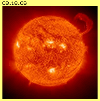
So unglaublich es scheinen mag: das solare Gravitationsfeld ist sehr viel schwächer als die irdische Gravitation. Das Bild 08.18.06 ist dafür ein zweifelsfreier Beweis. Diese riesige Sonne soll in einer Entfernung von 150 000 000 km die Erde auf ihre Umlaufbahn zwingen. Nahe der Sonnen-Oberfläche müsste deren Gravitation millionenfach stärker sein. Diese ´Flares´ fliegen (hundert-) tausend Kilometer weit hinaus, müssten aber aufgrund ihrer tausendfachen Erd-Masse umgehend wieder zurück stürzen in die Sonne. Statt dessen schweben sie wochen- und monatelang dort draußen herum. Natürlich kann dieses ´Brodeln´ der Sonne mit elektromagnetischen Stürmen usw. erklärt werden (siehe unten) und die Gravitation könnte damit im Nahbereich der Sonne ´überdeckelt´ oder kompensiert sein.
Wie aber sollte dann diese vermeintliche Anziehungskraft ungestört wirken können bis zu den äußeren Planeten? Auf keinen Fall ist damit die irdische Gravitation als universelle Konstante zu betrachten und sie ist noch nicht einmal übertragbar auf die Sonne und ihre Planeten. Alle Massen der Himmelskörper wurden aber auf dieser Basis berechnet, in gegenseitiger Abhängigkeit (also per Zirkelschluss). Darum sind auch die berechneten Daten des atmosphärischen Drucks, der Dichte und Temperaturen der Sonne und der Gas-Planeten rein fiktive Werte.
Druck, Volumen, Wärme
In Bild 08.18.07 sind schematisch die Abhängigkeiten thermodynamischer Prozesse skizziert. In einem Behälter (grau) befindet sich Gas. Mehr oder weniger Druck ist durch unterschiedliches Grün markiert, mehr oder weniger Wärme ist durch unterschiedliches Rot gekennzeichnet. Jeweils links wird der Druck durch ein Barometer angezeigt (schematisch als Quecksilbersäule skizziert), jeweils rechts wird die Wärme durch ein Thermometer gemessen (schematisch als Quecksilber-Thermometer skizziert).
Oben links ist die Ausgangssituation unter ´Normal-Bedingungen´ dargestellt. Die Gas-Partikel A drücken auf die Oberfläche des Quecksilbers B und heben diese schwere Flüssigkeit (blau) an, weil am oberen Ende der Röhre das Vakuum (weiß) keinen Gegendruck ausübt. Bei normalem atmosphärischen Druck in diesem Behälter würde die Quecksilbersäule etwa 760 mm Höhe anzeigen. Die Wärme eines Gases C beruht auf der Geschwindigkeit seiner Partikel. Diese wird im Thermometer D übertragen auf ein Medium (blau), dessen wärme-abhängige Ausdehnung dann die Temperatur anzeigt, z.B. 20 Grad Celsius.
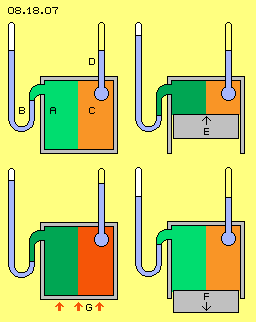
Oben rechts im Bild wird der Boden des Behälters durch einen Kolben E gebildet. Dieser ist nach oben geführt, so dass dem Gas nurmehr ein geringeres Volumen zur Verfügung steht. Entsprechend näher zusammen gerückt sind die Gaspartikel (dunkleres Grün). Je Zeiteinheit schlagen darum mehr Partikel auf die Messfläche des Barometers, so dass ein entsprechend höherer Druck angezeigt wird (hier nicht maßstabgetreu gezeichnet).
Normalerweise wird nun unterstellt, dass auch die Temperatur entsprechend ansteigen müsste. Das Medium im Thermometer ´zittert´ mit gleicher Geschwindigkeit wie das Gas und zeigt damit dessen Temperatur an. Es ist dabei unerheblich, wie viele Partikel des Gases ihre Geschwindigkeit in das Messgerät hinein übertragen. Darum bleibt prinzipiell die Temperatur des Gases unverändert, egal ob das Volumen des Behälters verkleinert oder vergrößert wird. Unten rechts ist der Kolben F wieder nach unten geführt. Die Temperatur ist noch immer unverändert. Auf die Mess-Fläche des Barometers treffen je Zeiteinheit nun aber weniger Partikel, so dass wieder ein geringerer Druck angezeigt wird.
Wärmeverlust und Wirkungsgrad
Dieses Ergebnis ist der Normalfall im Verhalten der Gase (in einem offenen System) - auch wenn das als Ausnahmefall in der gängigen Thermodynamik (der geschlossenen Systeme) dargestellt wird. In der Technologie der Dampfmaschinen und Verbrennungsmotoren wird externe Wärme zugeführt, wie unten links durch rote Pfeile G dargestellt ist. Damit wird die Geschwindigkeit der Partikel (dunkleres Rot) erhöht und entsprechend steigt auch die am Thermometer angezeigte Temperatur. Dadurch schlagen die Partikel nun auch mit größerer Heftigkeit (dunkleres Grün) auf die Messfläche des Barometers, so dass zugleich ein höherer Druck am Barometer angezeigt wird.
Der zweite Unterschied betrifft die Geschwindigkeit der Veränderungen. Die Temperatur bleibt konstant, wenn die obigen Kolben E und F langsam bewegt werden oder aufgrund ´statischer´ Drücke sich die Dichte des Gases nur graduell ändert (wie in offenen Systemen). In Verbrennungsmotoren bewegt sich der Kolben schnell und im Kompressions-Takt wird das Volumen rasch verkleinert. Wann immer Partikel auf den Kolben schlagen, werden sie mit erhöhter Geschwindigkeit zurück geworfen, wodurch das Gas erhitzt wird (wie schon bei einer Fahrradpumpe zu spüren ist). In der Expansionsphase findet der umgekehrte Prozess statt: alle auf den Kolben auftreffenden Partikel werden von dieser zurück-weichenden Fläche mit reduzierter Geschwindigkeit zurück geworfen, womit das Gas kühler wird. Diese Prozesse sind exakt beschrieben in Kapitel ´05.13. Explosion / Implosion´.
Die Abkühlung ist aber nur graduell, so dass die investierte mechanische Arbeit (das Hinein-Drücken des Kolbens in den Zylinder) wie auch die investierte Wärme-Energie nur zu einem Bruchteil in nutzbares Drehmoment zu überführen ist. Die gängige Thermodynamik beschreibt also nur die Ergebnisse einer unzureichenden Technik und leider wurde damit zur Maxime, dass Maschinen nur mit Wirkungsgrad < 1 zu machen sind. Im Gegensatz dazu müssen das Universum und die Sonne verlustfrei arbeiten, sonst gäbe es schon längst keine Bewegung mehr, wäre alles vor Kälte erstarrt.
Nullpunkt-Energie und Plasma
Eine andere Fehl-Einschätzung der Verhältnisse im ´eiskalten´ Universum ergibt sich aus Experimenten zur Nullpunkt-Energie. In Bild 08.18.08 links sind rein schematisch diese Prozesse skizziert. Der vorige Behälter (grau) ist gegenüber der Umgebungswärme bestmöglich isoliert und es wird dem System Wärme entzogen (siehe Pfeile A). Die Partikel treffen an die Wand, welche aber die ´Erschütterungen´ nicht gleichwertig zurück gibt. Die Geschwindigkeit der Partikel wird damit extrem verlangsamt, sie schlagen nurmehr schwach auf das Medium (blau) des Thermometers, das somit nur minimale Temperatur anzeigt. Das Gas B im Behälter ist abgekühlt (hell-rot) bis nahe zum absoluten Nullpunkt.
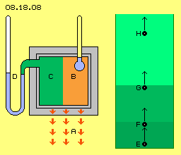
Es befinden sich noch immer gleich viele Partikel in diesem Behälter, die Dichte des Gases (normales Grün) ist also unverändert. Allerdings ´stehen´ die Partikel ziemlich regungslos im Raum, so dass sie nur schwach auf die Messfläche des Barometers schlagen und dieses somit nur geringen Druck anzeigt.
Die Physiker sind erstaunt darüber, dass selbst nahe am absoluten Null-Punkt noch immer Bewegung im Behälter vorhanden ist. Besonders das Helium zeigt dabei extreme Eigenschaften, indem bei niedrigen Temperaturen z.B. die Atome in einem Becher an der Wand hoch fließen. Bei sehr tiefen Temperaturen blähen sich die Atome auf zu vielfach größerem Volumen (im Bereich von Millimeter). In diesem ´Plasma´ sind deutlich interne Bewegungen zu erkennen (Details siehe Kapitel ´08.13. Äther-Modell der Atome´).
Nach wie vor scheut man sich, den Begriff ´Äther´ zu verwenden. Statt dessen wird über ´dunkle Materie´ oder ´Nullpunkt-Energie´ undefinierter Eigenschaften diskutiert. Ersatzweise vermutet man auch, dass das Universum angefüllt sei durch ein Plasma, z.B. bestehend aus ´elektromagnetischen Teilchen´ (undefinierter Art) und z.B. Himmelskörpern per elektromagnetischer Anziehung und Abstoßung interagieren (wiederum ohne klare Vorstellung des zugrunde liegenden Prozesses).
Aus Sicht des unteilbaren Äthers ist die gesamte lückenlose Substanz immer in schwingender Bewegung, selbstverständlich auch bei niedrigsten Temperaturen. In diesem universellen, realen Medium schwimmen lokale Wirbelkomplexe (der ´materiellen Atome´), mehr oder weniger viele in einer Volumen-Einheit (was der Dichte entspricht). Sie bewegen sich im Raum vorwärts, mehr oder weniger weit je Zeiteinheit (und nur diese Geschwindigkeit entspricht der Temperatur eines Gases). Oder mit anderen Worten: ohne diese Wander-Bewegung ist in einem Bereich von Äther fast noch die gleiche Menge an Bewegung vorhanden.
Geschwindigkeit und Dichte
Die Begriffe von Volumen und Temperatur, von Druck und Wärme der Thermodynamik sind abstrakte Begriffe und ihre gegenseitige Abhängigkeit nur (bedingt) gültig in geschlossenen Systemen. Real sind in Gasen lediglich die Eigenschaften der Dichte und der Geschwindigkeit gegeben. Wie voriges Beispiel aufzeigt, sind diese unabhängig voneinander: die Geschwindigkeit der Partikel ändert nichts an ihrer Anzahl je Volumen-Einheit. Umgekehrt bewirkt eine höhere Dichte keinesfalls zugleich eine höhere Geschwindigkeit der Partikel.
Wenn also in einem Stern sehr viele Partikel auf engem Raum vorhanden sein sollten - ergibt sich daraus keinesfalls automatisch eine hohe Temperatur (wie allgemein und ´selbstverständlich´ unterstellt wird). Wenn in den Weiten des Alls eine Temperatur von nur ein paar Grad Kelvin herrschen sollte - dann mögen sich dort nur verschwindend wenige ´Staub-Partikel´ befinden, aber deren Geschwindigkeit muss keinesfalls so gering sein wie in obigen Nullpunkt-Experimenten.
Bewegung im All
Rechts in obigem Bild 08.18.08 ist beispielhaft eine gleichbleibende Geschwindigkeit trotz unterschiedlicher Dichte skizziert. Ein Wasserstoff-Atom E (schwarz) soll in der irdischen Atmosphäre zufällig nach oben gestoßen sein mit einer Geschwindigkeit von z.B. 1000 m/s (repräsentiert durch die Länge des Pfeils). Innerhalb der dichten Luftschichten (dunkel-grün) wird das Atom bald kollidieren und mit einem anderen Partikel F die Geschwindigkeit und Richtung austauschen (hier vereinfacht gerade aufwärts).
In höheren Schichten ist die Dichte geringer (mittel-grün) und es wird etwas länger dauern, bis in etwas größerer Distanz erneut eine Kollision mit dem Partikel G statt findet. In Bereichen noch geringerer Dichte (hell-grün) erfolgen Kollisionen nach nochmals längerer Zeit und Distanz. Letztlich aber wird ein Partikel H weiter aufwärts fliegen, noch immer mit der ursprünglichen Geschwindigkeit. Diese muss keinesfalls der rechnerisch erforderlichen ´Flucht-Geschwindigkeit´ entsprechen und keine vermeintliche Anziehungskraft der Erd-Masse wird diesen Partikel zurück halten.
Auch weit draußen im ´leeren und kalten´ All fliegen also Partikel durch den Raum mit der Geschwindigkeit, welche am Anfang ihrer Reise gegeben war. Die Partikel fliegen nicht gerade aus, sondern werden z.B. im Äther-Whirlpool der Erde in dessen Drehsinn abgelenkt, danach noch lange Zeit im Drehsinn des Sonnen-Whirlpools. Die Partikel fliegen auch nicht mit konstanter Geschwindigkeit, sondern werden abgebremst oder beschleunigt, wenn sie durch Bereiche einer massiven Strahlung fliegen (z.B. in ´elektromagnetischen´, spiralig drehenden Röhren des Sonnen-Windes zu einem Planeten, siehe vorige Kapitel). Die Realität im All ist also völlig anders als die bei vorigen Nullpunkt-Experimenten gegebene Situation, sowohl was die Bewegung von Partikeln anlangt und natürlich auch hinsichtlich der fortwährenden Bewegungen des omnipräsenten Äthers.
Nebelschwaden
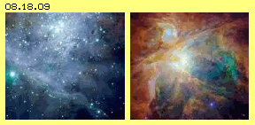
Die Erde verliert einige Gas-Partikel und die Atmosphäre des Mars flog weitgehend ins All davon. Die weitaus meisten Partikel aber werden durch die Explosion von Sternen hinaus geschleudert. Bei einer Supernova kann man ´Druckfronten´ erkennen, die aus dem Zentrum davon rasen. Andererseits schwebt Staub wie Nebelschwaden im Raum (siehe Beispiele in Bild 08.18.09).
Die Materie ist nicht gleichförmig im Universum verteilt, sondern bildet ein ´Gespinst´ von mehr oder weniger dichten Fäden und Wolken. Bemerkenswert sind dabei die relativ scharfen Kanten oder Membranen, die selbst bei zarten Schleiern vorhanden sind. Bei vorigen ´Druckfronten´ kommt die Verdichtung zustande, weil die vordersten Partikel durch Widerstände aufgehalten werden, während die restlichen Partikel ungestört hinterher fliegen können. Bei ´ruhigen oder ruhenden´ Schleiern aber muss die Ursache der äußeren Hülle eine andere sein. Es kann keine Masse-Anziehung im herkömmlichen Sinne von Gravitation sein. Sonst dürfte die Verdichtung nicht am Rand, sondern müsste mittig sein.
Zwischen dem Rand und mittigen Bereichen der Schwaden existiert eine Differenz hinsichtlich der eintreffenden Strahlung. Fortgesetzter Strahlungsdruck bewirkt einen Schub auf die Partikel, auch wenn die ´Masse´ eines Photons sehr viel geringer ist als die von Atomen. Andererseits kann Strahlung von den Partikeln absorbiert werden. In jedem Fall existiert damit innerhalb der Wolke relativ wenig Strahlung. Die Partikel am Rand der Wolke aber werden zu einer Membrane verdichtet.
Strahlung und Verdichtung
In Bild 08.18.10 ist ein Ausschnitt einer solchen Wolke schematisch skizziert. Der dunkel-grüne Bereich repräsentiert den Rand, die mittel- und hell-grünen Bereiche sind weiter innen und weisen geringere Dichte auf. Der Pfeil A repräsentiert eine Strahlung, welche einen Partikel (schwarz) weiter in die Wolke hinein schiebt.
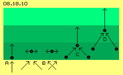
Die Strahlung trifft natürlich nicht immer lotrecht auf den Rand, sondern aus allen Richtungen. Diese Streuung der Strahlen wird insofern besser repräsentiert durch die Pfeile B mit jeweils 45 Grad Neigung. Es kommt damit eine ´horizontale´ Bewegungskomponente auf, d.h. die Atome werden hin und her geschoben und bilden eine gewisse ´Sperrschicht´. Oben wurde beispielhaft aufgezeigt, dass ein Wasserstoff-Atom die Erde verlassen und ´quer´ durch das All fliegen und eine solche Wolke erreichen kann. Aus allen Richtungen können ´neue´ Partikel hinzu kommen und auch die ´alten´ fliegen kreuz und quer umher. Obwohl die Dichte in der Wolke sehr gering ist, kommt es zu Kollisionen, zufällig auch zwischen mehreren Partikeln gleichzeitig.
Diese Situation ist bei C skizziert: zwei Atome fliegen diagonal in die Wolke hinein (analog zur prinzipiellen Richtung voriger Strahlung) und treffen zugleich auf ein drittes Atom. Dieses dritte Atom fliegt nun beschleunigt in die Wolke hinein, weil es von zwei Atomen anteilige Bewegungsenergie aufgenommen hat. Die beiden energie-abgebenden Atome bleiben relativ ´bewegungslos´ zurück. Bei D ist skizziert, dass sich dieser Prozess mit bereits beschleunigten Atomen wiederholen kann, auch in steilerem Winkel.
Wärme und Kälte
Am Rand bleiben also Atome zurück, die sich nur langsam bewegen. Sie ´stehen´ im Raum herum und bieten eintreffender Strahlung wenig Widerstand. Der Strahlungsdruck kann diese ´kalten´ Atome zu größerer Dichte zusammen schieben. Weiter nach innen fliegen die Atome mit erhöhter Geschwindigkeit, diese Bereiche sind somit ´wärmer´.
Diese Differenzierung widerspricht den üblichen ´Gesetzen der Thermodynamik´: es gibt nicht diese unausweichliche Tendenz von warm-nach-kalt. Das Universum stirbt nicht den Kältetod. Schon jede zufällige Anhäufung von ´Staub´ ergibt eine Differenzierung der Geschwindigkeit von Bewegungen. Nur das Gesetz der Energie-Konstanz gilt unabdingbar: wenn irgendwo mehr Wärme entsteht, ergibt sich anderswo größere Kälte.
Gas-Kugeln
Materielle Ansammlungen von Gas- oder Staubpartikeln können eine Windhose bilden (wie oben bei Bild 08.18.01 diskutiert wurde), aber nur als ein vergängliches Bewegungsmuster. Staubwolken ziehen sich nicht zusammen aufgrund einer mysteriösen Masse-Anziehungskraft, sonst gäbe es z.B. nicht so viele weitläufige ´Nebelschwaden und -Fäden´. Wenn materielle Partikel im All dicht versammelt sind, dann in Form rotierender Kugeln und nur, weil sie in einem Äther-Wirbel ´gefangen´ sind.
Die Entstehung und Charakteristik der Äther-Whirlpools wurde oben beschrieben. Zum Freien Äther der Umgebung hin ist das Schwingen chaotisch und kleinräumig ist, während nach innen die schlagende Bewegung auf ausgeweiteten Bahnen erfolgt (wie oben bei Bild 08.18.02 diskutiert wurde). Daraus ergibt sich der zentripetale Schub auf die ´groben Bewegungsmuster´ der Atome (wie oben bei Bild 08.18.03 diskutiert wurde). Die Staubwolke driftet in diesem Karussell. Die Partikel werden darin nicht nur durch externen Strahlungsdruck (wie bei vorigen ´Nebelschwaden´), sondern zusätzlich durch die zentripetale Schub-Komponente des Äther-Potentialwirbels in eine dauerhafte Kugelform zusammen geschoben.
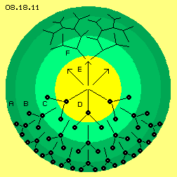
In Bild 08.18.11 ist solche eine runde Gas-Wolke skizziert. Im unteren Sektor sind die vorigen Mehrfach-Kollisionen eingezeichnet. Natürlich bewegen sich die Gaspartikel weiterhin chaotisch im Raum. Aber mehrheitlich sind nun die Vektoren der Mehrfach-Kollisionen einwärts gerichtet und von Schicht zu Schicht ergibt sich beschleunigte Bewegung zum Zentrum hin. Nach herkömmlicher Meinung müsste im Zentrum die größte Dichte gegeben sein (basierend auf der Vorstellung einer Masse-Anziehungskraft, die aber bestenfalls eine ringförmige Konzentration ergeben könnte). Tatsächlich ist die Dichte am Rand (A, dunkelgrün) größer als innerhalb der Kugel (B und C, mittel- und hell-grün). Im Zentrum (D, gelb) ist die Dichte nochmals geringer, schon allein weil schnelle (heiße) Partikel mehr Raum beanspruchen als langsame (kalte) Partikel.
Im Zentrum treffen die Atome mit großer Energie zusammen - und werfen sich gegenseitig zurück nach außen. Dem Druck einwärts fliegender Partikel steht also ein gleichwertiger Bewegungsdruck nach außen entgegen, wie hier durch Pfeile E markiert ist. Auch von innen her werden damit die Partikel verdichtet zum Rand hin. Dort treten Kollisionen nach kürzerer Distanz auf mit größerer Wahrscheinlichkeit von Mehrfach-Kollisionen. Die vom Zentrum auswärts gerichtete schnelle Bewegung verteilt sich auf viele Partikel mit entsprechend geringer Geschwindigkeit, wie hier durch das ´Wege-Netz´ F angedeutet ist.
Masse-Zuwachs und Spin
In Bild 08.18.12 ist schematisch skizziert, warum ´heiße´ Gase mehr Raum beanspruchen als kalte. Oben links bei A ist ein Wasserstoff-Atom dargestellt. Es besteht im Kern aus einer ´Doppelkurbel´ (B, dunkel-grün). Deren schwingende Drehung wird herkömmlich als ´Spin´ bezeichnet. Das Schwingen im Wasserstoff-Atom ist asymmetrisch, auf einer Seite schwingt die Kurbel weit, auf der anderen nur schwach (für ein ´Andocken´ anderer Atome gibt es nur einen relativ ruhigen Pol, nur ein ´Auge´ bzw. Wasserstoff ist ein-wertig). Dieses Schwingen auf mehr oder weniger weiten Bahnen muss nach außen zum Freien Äther hin reduziert sein. Darum ist dieser Kern umgeben von einer Aura (C, mittel-grün) ausgleichender Schwingungen (Details siehe Kapitel 08.13. ´Äther-Modell der Atome´).
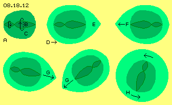
Wenn dieses Atom im Raum vorwärts gestoßen wurde (Pfeil D) muss der Äther vorn sukzessiv das Bewegungsmuster des Atoms annehmen. Vor und um das Atom herum ist also mehr Äther in Bewegung als beim ´ruhenden´ Atom. Je schneller die Bewegung durch den Raum ist, desto weiter wird die Aura (E, hell-grün). Die Beschleunigung eines materiellen Körpers erfordert Energie-Einsatz, bis dem Äther diese zusätzlichen Bewegungen aufgeprägt sind. Danach kann das Atom reibungs- und verlustfrei weiter durch den Raum driften (aber nur in einem teilchen- und lückenlosen Äther). Wenn dieses Atom auf ein entgegen kommendes Atom F trifft, tauschen beide ihre kinetische Energie und Bewegungsrichtung aus.
Solche Kollisionen finden nur selten direkt frontal statt. Wesentlich häufiger werden die Atome aneinander vorbei schrammen oder seitlich zusammen stoßen, wie z.B. bei den Atomen G durch Pfeile angezeigt ist. Danach werden beide Atome wieder auseinander treiben, aber mit mehr ´Spin´. Die ganze Bewegungskugel rotiert, twistet oder taumelt nun durch den Raum. Ein Teil der Bewegungsenergie ging dabei über in ein Drehmoment der Eigen-Rotation. Diese neue Bewegungs-Komponente (siehe Pfeile H) erfordert eine nochmals größere ausgleichende Aura (hell-grün).
Körper in schneller Bewegung erfahren also keinen ´Masse-Zuwachs´ und auch keine ´Lorentz-Längen-Kontraktion´. Je höher die Vorwärts-Geschwindigkeit und/oder je stärker die Eigen-Rotation der Atome, desto mehr Äther-Volumina sind involviert. Je ´heißer´ also ein Gas ist, desto mehr Raum beansprucht die Aura um die Partikel. Darum dehnen sich Gase bei Erwärmung aus, bzw. schrumpft der Raum-Bedarf je nach Kälte eines Gases.
Schwirrendes Zentrum und zentripetaler Äther-Druck
Oben wurde festgestellt, dass ´Staubwolken´ im Zentrum eines Äther-Whirlpools zu einer Kugel geformt werden. Es wird sich dabei ein relativ dichter Randbereich ausbilden. Nach innen wird die Dichte geringer und die Partikel fliegen schneller umher, wobei ein ´heißes´ Zentrum nur zulasten des ´kalten´ Randes entstehen kann. In Bild 08.18.13 sind rechts diese Dichte- und Geschwindigkeits-Differenzen wieder durch drei Schalen repräsentiert (A, B und C, dunkel-, mittel- und hell-grün).
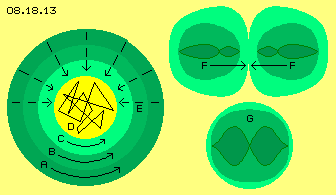
Die dortigen Partikel werden in der ´Strömung´ des Whirlpools mit-schwimmen, wie durch die Pfeile angezeigt ist. Eigentlich müsste dieser Potentialwirbel bis ins Zentrum reichen mit einem Übergang zu einem starren Wirbel. Einerseits ist im zentralen Bereich (D, gelb) die Drehgeschwindigkeit relativ langsam. Andererseits ist dort aller Äther praktisch pausenlos gezwungen (wenngleich immer nur vorübergehend), die Bewegungsmuster der extrem schnell fliegenden Atome anzunehmen. Aller Äther führt ständig die Bewegungen der umher schwirrenden Atome aus (wie schematisch durch wirre Linien angezeigt ist).
Dagegen bewegen sich die Atome in den äußeren Regionen eher gleichförmig und der Äther zwischen diesen Gas-Partikeln ist nahezu ´normal´ schwingend, also auf engen Bahnen, fast wie Freier Äther. Es ist damit eine große Differenz gegeben zwischen diesem kleinräumigen Schwingen und den groben, weiten Bewegungen im Zentrum. Wie oben erläutert wurde, ergibt sich damit eine starke Schub-Komponente von außen in diesen zentralen Bereich hinein (siehe Pfeile E). Jede Auswärts-Bewegung der Atome wird gedämpft und jede Einwärts-Bewegung beschleunigt, besonders zum Kernbereich hin.
Kern-Fusions-Kette
Wenn dort nun zwei Wasserstoff-Atome (F, oben rechts) sehr heftig zusammen prallen (und ihr Spin und Twist ´kompatibel´ sind), kann deren internes Schwingen ineinander übergehen, d.h. beide können zu einem Helium-Atom (G, unten rechts) ´verschmelzen´. Dabei wird selbstverständlich auch die Äther-Umgebung kurzfristig ´erzittern´ bzw. können ´Bewegungs-Fetzen´ davon fliegen (normalerweise Alphastrahlung bzw. positive Ladungseinheiten genannt).
In folgendem Bild 08.18.14 ist oben die bekannte Folge von Kernfusionen dargestellt: aus vier Wasserstoff-Atomen ergibt sich ein Helium-Atom. Drei dieser Kerne können sich zu einem Kohlenstoff-Atom vereinigen. Dieses ´verbrennt´ zusammen mit einem weiteren Helium-Atom zu Sauerstoff. In großen Sternen kann fortgesetzte Fusion bis zum Eisen führen (und bei ´Roten Riesen´ oder einer Supernova bis zum Uran). Die roten und blauen Kugeln symbolisieren hier Protonen und Neutronen, welche den Kern dieser Elemente bilden sollen.
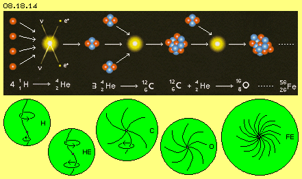
Nach meinem ´Äther-Modell der Atome´ gibt es solche Teilchen nicht, vielmehr werden Atome aus unterschiedlich vielen Wirbel-Strängen gebildet, wie schematisch in diesem Bild unten skizziert ist. Wasserstoff H schwingt asymmetrisch, während Helium He in Form einer symmetrischen ´Doppelkurbel´ schwingt. Wenn drei solcher Bewegungsmuster so heftig zusammen treffen, dass sie sich ineinander ´verkeilen´, bilden sie einen Stern von sechs Wirbeln, ein Kohlenstoff-Atom C. Wenn nochmals eine Doppelkurbel integriert wird, ergibt sich der 8-wertige bzw. 8-strahlige Sauerstoff O. Es sind prinzipiell immer die gleichen Doppelkurbeln, die in unterschiedlicher Anzahl umfangreiche Wirbel-Komplexe bilden, z.B. auch ein Eisen-Atom Fe. Die Verbindungslinien synchronen Schwingens sind hier schematisch nur als flächige Sterne skizziert, real sind sie in der dreidimensionalen Kugelform gleichförmig radial zum Zentrum ausgerichtet.
Energie-Konzentration
Es ist eine große Kraft erforderlich, um diese Bewegungsmuster ineinander zu drücken. Damit ergibt sich die Frage, woher diese Energie kommen soll. Es gilt das Gesetz der Energie-Konstanz, also kann keine zusätzliche Energie ´gewonnen´ werden - wohl aber kann sie ´konzentriert´ werden (im Widerspruch zum vermeintlichen Entropie-Gesetz). Ausgangspunkt soll ein Wasserstoff-Atom sein, das sich bei 25 Grad Celsius auf der Erde mit 1770 m/s bewegt. Oben wurde unterstellt, dass es mit 1000 m/s davon fliegt, den ´kalten´ Weltraum durchquert und mit unveränderter Geschwindigkeit auf der Sonne eintrifft. Dort gibt es seinen Bewegungsimpuls weiter in die große Ansammlung dortiger Wasserstoff-Atome.
Wie oben bei Bild 08.18.11 dargestellt wurde, wird es zu einer Mehrfach-Kollision kommen und danach ein Atom mit z.B. 1400 m/s weiter einwärts fliegen. Bei einer nochmaligen Mehrfach-Kollision mit Faktor 1.4 wird ein Atom schon auf 2000 m/s beschleunigt. Nach jeweils zwei solchen Ereignissen wird eine Verdopplung auf 4, 8, 16, 32 ... km/s erfolgen. Es besteht hohe Wahrscheinlichkeit für eine lange Folge solcher Beschleunigungs-Prozesse, radial einwärts durch Wasserstoff-Schichten, einige hunderttausend Kilometer stark. Spätestens im Zentrum von Sternen können darum Atome mit extremer Geschwindigkeit herum schwirren, also ´Temperaturen von Millionen Grad´ herrschen.
Diese Konzentration von Bewegung in Form dieser ´Raser´ ist nur möglich, weil in äußeren Bereichen entsprechend viele Atome ihre Bewegungsenergie abgegeben haben. Diese ´Steher´ sind relativ bewegungslos, beanspruchen wenig Bewegungsraum und bilden damit Schichten relativ großer Dichte - von entsprechend niedriger Temperatur. Die große Masse aller Wasserstoff-Atome eines Sterns wird also sehr langsam sein, so dass die äußeren Schichten sehr dicht und ´kalt´ sind. Nach innen wird die Dichte abnehmen und die Geschwindigkeit der Atome zunehmen. Dort fliegen innerhalb eines relativ geringen Volumens relativ wenige Atome mit extremen Geschwindigkeiten umher.
Hitze-Kapseln
Dieser Prozess zur Konzentration von Energie mag zunächst wenig wahrscheinlich erscheinen, aber er ist geradezu zwangsläufig. Mehrfach-Kollisionen können prinzipiell in allen Richtungen stattfinden. Hier aber lastet Strahlung und Schub von außen auf der äußeren Kugelschale. Darum sind die Vektoren bei Mehrfach-Kollisionen bevorzugt nach innen gerichtet, so dass die Atome mit überhöhter Geschwindigkeit mehrheitlich nach innen fliegen. Deren starker Impuls wird weiter gereicht, bei Kollisionen ausgetauscht, aber er bleibt damit in der ´Hitze-Blase´ erhalten.
Die überhöhte Geschwindigkeit bzw. Hitze wird nur reduziert, wenn ein starker Impuls wieder auswärts gerichtet ist in die äußere Schichten höherer Dichte hinein. Dort besteht erhöhte Wahrscheinlichkeit, dass ein von innen kommendes, schnelles Atom zugleich auf zwei Atome trifft. Die hohe Bewegungsenergie wird damit wieder verteilt auf mehrere Atome der äußeren, dichten und kühlen Schicht (siehe hierzu nochmals Bild 08.18.11).
Es ist ein ausgeglichener Zustand gegeben, wobei eine mittige heiße Zone ´eingekapselt´ ist in einer kalten Schale. Allerdings sind diese Zonen anfällig für externe Störungen und damit ziemlich labil. In einem Stern wird es nicht nur eine große Hitze-Blase im Zentrum geben. Zumindest auf der Sonne scheinen abwechselnd viele solcher Hitze-Blasen sich auszudehnen und wieder zusammen zu brechen oder zu explodieren (siehe unten).
Implosion
In obigem Bild 08.18.11 ist unten dieser einwärts gerichtet Beschleunigungsprozess dargestellt (dort von A bis D). Die Atome im Zentrum stoßen sich gegenseitig ab und es ergibt sich ein entsprechender, nach außen gerichteter Gegendruck (in diesem Bild oben schematisch mit E und F gekennzeichnet). Wenn es im Zentrum jedoch zur Wasserstoff-Helium-Fusion kommt oder gar die ganze Fusionskette statt findet, ergibt sich eine andere Situation. Dabei spielt das Volumen der Atome eine entscheidende Rolle. In vorigem Bild 08.18.14 repräsentieren die grünen Kreisflächen maßstabgerecht den Durchmesser dieser Atome (nicht nur der Kerne).
Aus zwei (oder nach gängiger Anschauung vier) H-Atomen resultiert ein He-Atom. Die schnellen H-Atome müssen bei der Fusion hart zusammen treffen, d.h. beide fliegen nicht wieder gleich schnell auseinander. Sie hinterlassen vielmehr ein He-Atom, das relativ bewegungslos im Raum verbleibt. Es ist zudem etwas kleiner als ein H-Atom und beansprucht darum ein geringeres Bewegungsvolumen. Nach obiger Fusions-Kette können zwölf H-Atome zusammen schrumpfen auf das Volumen eines C-Atoms. Nochmals ein He-Atom kann integriert werden in das nochmals kleinere Volumen eines O-Atoms. Letztlich kann anstelle von ursprünglich 56 rasend schnellen H-Atomen ein einziges Fe-Atom resultieren, das sehr viel weniger Raum beansprucht.
Jeder Fusions-Akt reduziert die Anzahl der Atome und damit den zuvor beanspruchten Bewegungsraum. Es verbleiben weniger schnelle H-Atome, so dass der Gegendruck nach außen reduziert wird (voriges E und F in Bild 08.18.11). Für die Atome der äußeren Schichten fehlen plötzlich die nach außen drängenden Kollisionspartner. Alle Atome, die rein zufällig zum Zentrum hin gestoßen werden, können relativ weite Stecken nach innen fliegen. Die äußeren Schalen brechen nach innen ein, es findet eine lawinenartig anschwellende Implosion statt. Unter den nach innen stürzenden Atomen erhöht sich nochmals die Wahrscheinlichkeit von Mehrfach-Kollisionen mit ihrem Bescheunigungs-Effekt.
In dieser Situation kann es durchaus Fusion bis zum Eisen geben. Das Volumen des Sterns wird dabei auf einen Bruchteil seines ursprünglichen Umfangs zusammen fallen. Wohlgemerkt: es ist keine zentripetale Gravitation wirksam. Auch die riesige Ansammlung von Wasserstoff in Sternen benimmt sich wie ein ganz normales Gas: die Atome fließen von sich aus in Bereiche geringerer Dichte. Nur wenn sie durch eine aktuelle Kollision zufällig in diese Richtung gestoßen wurden, können sie dorthin längere Wege ohne erneute Kollision zurück legen. Nur dadurch kommt es in Gasen zu einer Strömung, hier in zentripetaler Richtung.
H-Bombe, Supernova, Kavitation
Mit heutiger Technik wird die H/He-Fusion ´beherrscht´. Beispielsweise reichen 36 kg Wasserstoff zur Erzeugung von Sprengkraft entsprechend zu 1000000000 kg TNT. Nach gängiger Theorie ergibt sich bei der Fusion ein Massedefekt von 0.73 % und diese 263 Gramm Masse werden in Energie transformiert nach der bekannten Formel E=m*c^2.
Den abstrakten Begriff ´Masse´ könnte man gleich setzen mit dem bedeutungslosen Begriff ´Energie´, weil beides letztlich reale Bewegung ist (einerseits der Wirbelmuster der Atome, andererseits deren Vorwärtsbewegung im Raum, aber immer nur Bewegung von Äther im Äther). Die Korrelation zum Quadrat der Lichtgeschwindigkeit dagegen ist reine Fiktion (und wurde niemals konkret nachgewiesen). Sie kaschiert nur die Unkenntnis über die wahre Ursache dieser gewaltigen Kräfte (jenseits aller chemischen Reaktionen oder elektromagnetischer Prozesse).
In weit größerem Umfang kann diese Sprengkraft bei Sternen auftreten. Wenn die obige Fusionskette zu einem kritischen Zustand geführt hat, explodieren große Sterne in Form einer Supernova. Binnen weniger Stunden werden große Teile der Masse hinaus geschleudert. Die Kollisionen zwischen Partikeln sind so heftig, dass Strahlung in vielen Frequenzen entsteht. Auch aus der Entfernung von Lichtjahren ist eine Supernova für einige Tage mit bloßem Auge zu sehen. Eine Erklärung dieser phänomenalen Kräfte ist nur auf Basis eines realen Äthers möglich. Voriger Implosion folgt eine Explosion - zur Entspannung maximaler Beugung. Diese Vorgänge betreffen primär den Äther selbst und erst sekundär fliegen dabei auch materielle Partikel durch den Raum.
In kleinem Umfang findet dieser Prozess bei der ´Kavitation´ statt: die gekrümmten Flächen der Sogseite von Propellern schneiden so schnell durch das Wasser, dass gelegentlich die Wasserpartikel nicht folgen können. Es entsteht eine ´Blase´ (keine Luftblase) als ein Äther-Bereich, der kurzfristig frei von ´materiellen´ Bewegungsmustern ist. Auch Wasserpartikel kollidieren fortgesetzt untereinander und es besteht eine hohe Wahrscheinlichkeit, dass vom Rand der Blase gleichzeitig viele in diese ´Leere´ hinein gestoßen werden. ´Lumineszenz´ zeigt durch kurzes Aufblitzen deren nachfolgendes Zusammenstoßen an. Darüber hinaus kann im dortigen Äther so großer ´Stress´ entstehen, der eine schlagartige Entspannung erfordert. Es erscheint dann so, als könne ´weiches´ Wasser deutliche Löcher in hartes Metall schlagen.
Elastischer Stoss
In Bild 08.18.15 sind diese Zusammenhänge schematisch skizziert. Die grünen Kreise repräsentieren Atome. Ihre interne Bewegung wird hier durch schwarze, S-förmige Kurven angezeigt. Nach gängiger Lehre soll der Atom-Kern verschwindend klein sein in Relation zum Durchmesser des Atoms insgesamt. Daraus schließe ich, dass die Beugefähigkeit des Äthers sehr gering ist, z.B. maximal 1:10000. Wenn die Exzentrizität dieser ´Doppelkurbel´ ein Millimeter wäre, so müsste sie real 20 m lang sein. Äther ist offensichtlich ´härter als Stahl´ bzw. alle Krümmungen sind hier extrem überzeichnet.
Bei A bewegen sich zwei Atome aufeinander zu. Als schwarze Linie sind auch dazwischen die benachbarten Ätherpunkte markiert. Entlang dieses ´Stahlstabes´ bewegen sich ´twistend´ diese S-förmigen Krümmungen aufeinander zu. Schon bevor sich die Aura beider Atome berühren, wird der Äther dazwischen eine Krümmung annehmen, passend zu den Schwingungen der Atome.
Wie bei B skizziert ist, werden zunehmend auch die ´Stahlfedern´ innerhalb der Atome verspannt sein. Das dortige Schwingen wird kürzer und muss entsprechend weiter werden, so dass die bislang symmetrische Kontur der Atome deformiert wird. Einerseits steht dieser seitlichen Ausweitung nun erhöhter Gegendruck des umgebenden Äthers entgegen. Andererseits werden beide Bewegungsmuster intern die ungleiche Spannung auflösen: sie bewegen sich in Richtung geringeren Widerstandes (siehe C).
Dieser elastische Stoss bei normaler Kollision unter Atomen muss absolut verlustfrei sein - sonst würden z.B. Gaspartikel nicht pausenlos weiter in Bewegung bleiben. Verlustfrei kann dieser Prozess nur sein, wenn kein Teil aller Bewegungen verloren gehen kann - was nur in einem lückenlosen Medium möglich ist. Der Äther selbst darf dabei nicht elastisch sein - sonst würde er in sich die Impulse materieller Bewegungsmuster absorbieren. In einem elastischen Material würden zwangsläufig alle Schwingungen gedämpft - und das Universum wäre längst erstarrt.
Licht
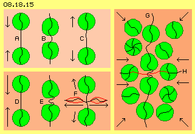
Unten links bei D ist die gleiche Ausgangssituation skizziert, allerdings bewegen sich hier die Atome schneller aufeinander zu. Meist wird der Drehsinn ihres Schwingens nicht gleichsinnig sein. Bei ihrer Annäherung werden die Konturen der Atome stärker deformiert und deren ´Stahlfedern´ stärker gebeugt. Besonders beansprucht ist die Beugefähigkeit des Äthers auf der Verbindungslinie E zwischen den Atomen.
Entsprechend zur dortigen ´Schleife´ (wiederum extrem überzeichnet) muss auch der Äther links und rechts davon analoge Bewegung annehmen. Eine Entspannung in diesem Ätherbereich kann nur eintreten, wenn dieses spiralige Bewegungsmuster seitlich ´davon fliegt´ (siehe F). Ein (Feder-) Bruch kann im lückenlosen Äther nicht vorkommen. Darum muss die Ausgleichsbewegung extrem schnell erfolgen. Eine Umdrehung reicht zur Entspannung. Dieses mit Lichtgeschwindigkeit entlang einer seitlichen Verbindungslinie davon fliegende Bewegungsmuster (rot markierter Bereich) wird normalerweise ein ´Photon´ genannt. Abhängig von den Umständen der Kollision kann jeweils eine ´Welle´ unterschiedlicher Länge und Amplitude entstehen.
Nach diesem ´Lichtblitz´ können die Bewegungsmuster beider Atome wieder auf ihrer vertikalen Verbindungslinie nach oben bzw. unten zurück wandern, analog zu obiger Kollision bei C. Aufgrund der asymmetrischen Deformationen werden sie allerdings mehr vorwärts ´taumeln´. Die Atome werden weniger Vorwärts-Bewegung aufweisen, weil im Äther absolute Energie-Konstanz herrscht. Ein Teil ihrer kinetischen Energie wurde übertragen in die generierte ´Spiral-Welle´. Das Aus-Senden des Lichts ergibt also zugleich eine Abkühlung des Gases.
Stress
Die Atome sind also durchaus ´weiche´ Bewegungsmuster, zumindest in den äußeren Bereichen ihrer Aura. Zum Zentrum hin laufen die Bewegungen zusammen, so dass alles Schwingen weitgehend synchron vonstatten gehen muss. Je komplexer das Wirbelmuster ist, desto ´härter´ erscheint der Kernbereich des Atoms. Allerdings ist auch dort im Normalfall die Biegefähigkeit des Äthers noch nicht maximal beansprucht, sonst könnten obige Verbindungslinien bei Kollisionen nicht wie ´Stahlfedern´ funktionieren.
In diesem Bild rechts ist nun die Situation im Zentrum einer Implosion schematisch skizziert. Von außen stoßen aus allen Richtungen neue Atome hinzu, so dass sie im Zentrum dicht zusammen gedrängt sind und fortwährend kollidieren, in aller Regel mit gegenläufigem Drehsinn. Die Verbindungslinien innerhalb der Atome sind stark gebeugt und auch der Äther zwischen den Atomen ist extrem ´verspannt´. In dieser Skizze sind nur eine vertikale Verbindungslinie G und eine in horizontaler Richtung H eingezeichnet. Real existieren zwischen all diesen Atomen benachbarte Ätherpunkte, und überall sind Bewegungen auszugleichen. Nur in Kristallen können Atome so eng zusammen stehen, wenn alle Bewegungen aufeinander abgestimmt sind. Hier aber in dieser ´Hexenküche´ ist aller Äther bis zur Grenze seiner Biegefähigkeit verdrallt.
Zum Ausgleich der Verspannungen rasen fortwährend spiralige Bewegungswellen zwischen den Atomen umher. Gelegentlich ´bohren´ sich diese Spiralen in die Oberfläche benachbarter Atome hinein - was Ionen ergibt. Je nach Intensität der spiraligen Welle können sie auch tief in ein benachbartes Atom eindringen und dort als zusätzlicher Wirbelzopf ´stecken-bleiben´ - was einer Fusion entspricht. Letztlich werden dabei aus vielen einfachen eine geringere Anzahl komplexer Atome. Diese beanspruchen relativ wenig Volumen, was diese implosive Situation und den Stress im Äther nochmals verschärft.
Keine Kern-Fusion
Der Übergang eines chemischen Elements in ein anderes ist keine ´Kern´-Fusion. Es werden nicht einfach ein paar zusätzliche Protonen oder Neutronen integriert (schon weil es solche ´Teilchen´ real nicht gibt). Nach den Quanten-Theorien bestehen Nukleonen aus diversen Quarks (die wiederum keine Teilchen sein können). Anfangs kannte man wenige Quarks, inzwischen sind über tausend nach ´seltsamen´ Eigenschaften katalogisiert. Quarks sind äußerst kurzlebig, eine Form geht blitzschnell in eine andere über, wobei eine passende dritte Form zugegen sein muss. Anstelle Bohrscher Elektronen auf Bahnen inklusiv Heisenbergscher Unschärfe wird heute bevorzugt von undefinierten ´Elektronen-Wolken´ gesprochen. Physiker erwarten nicht, dass diese Hypothesen logisch verständlich sein sollen. Auf jeden Fall kann ein Atom nicht auf seinen Kern - einen winzigen Bruchteil seines Volumens - reduziert werden.
Den Wissenschaftlern ist es offensichtlich gelungen, ins Innere der Atome einen ´Lichtstrahl zu werfen´. Was sie erkennen konnten, waren aber keine ´Teilchen´ sondern ´Standbilder´ von Bewegungen. Die einzelnen Quarks sind Bahnabschnitte von Ätherbewegungen - und es ist selbstverständlich, dass diese während ihres Schwingens fortwährend ihre Form ändern - so wie hier diese Prozesse als ´Beugung von Verbindungslinien´ beschrieben werden. Bei allen kostspieligen Experimenten zur inneren Struktur der Atome - blieben nichts als Bilder von ´Bewegungsfetzen´.
Atome bestehen ausschließlich aus ganz normalem Äther. Sie weisen nur radial ausgerichtete Wirbel auf in unterschiedlich komplexen Mustern. Auf oben dargestelltem ´gewaltsamem´ Wege können zusätzliche Wirbel integriert werden. Die Umwandlung einiger (für Lebewesen wichtigen) chemischen Elemente findet in der Natur ständig statt, unter ganz normalen Bedingungen, allerdings bei Anwesenheit bestimmter Katalysatoren. Im übrigen ist es ein Unding, per Kern-Fusion eine nutzbare Energie erzeugen zu wollen. Das Ergebnis einer Kernfusion ist lediglich die Verringerung des erforderlichen Volumens für atomare Bewegungen, also die Schaffung einer Implosion. Die Folge ist immer eine Explosion mit zerstörerischen Kräften, denen keine Materie stand halten kann (siehe die Wirkung obiger winziger Kavitations-Bläschen). In gigantischem Ausmaß ist das Ergebnis als Supernova zu sehen.
Befreiungs-Schlag
Die wahre Ursache für eine Supernova (wie einer H-Bombe oder voriger Kavitation) ist der Stress im Äther, welcher bis an die Grenze seiner Biegefähigkeit beansprucht wurde. Sobald die Beugung diese Grenze zu übersteigen droht oder sobald sich irgendwo eine ´Schwachstelle´ (benachbarter Bereich geringerer Verspannung) ergibt, rasen spiralige Ausgleichsbewegungen dort hin. In diese lokale Entspannung hinein lösen sich auch benachbarte Verspannungen. Es entsteht eine lawinenartig anwachsende Bewegung allen Äthers in diesem Bereich.
Im Extremfall tritt ein, was im lückenlosen Äther eigentlich nicht sein darf: ein Bereich ohne Bewegung. In einer Stress-Zone könnten sich zwei gegenläufige Bewegungen so verkeilen, dass momentaner Stillstand eintritt. Rundum ist aller Äther weiterhin in Bewegung, alle in gegenseitiger Abhängigkeit. Diese Blockade kann nicht mehr durch die Aussendung elektromagnetischer Wellen aufgelöst werden, vielmehr werden nun ganze Bewegungsbündel von Atomen mit Lichtgeschwindigkeit vom Ort des Stillstands weg-katapultiert. Dieser Prozess hat also nichts zu tun mit gewöhnlichen chemischen Reaktionen oder mit elektromagnetischen Kraftwirkungen. Die ´frei-gesetzte´ Energie resultiert vielmehr aus dem Volumen kohärenter Bewegungen des gesamten Stress-Areals.
Dennoch ist aller Äther noch immer prinzipiell ortsfest und es fliegen keine Äther-´Teile´ auseinander. Eine ´Strömung´ im Äther besteht nur aus einer schlagenden Bewegungskomponente. Dieser ´Befreiungs-Schlag´ ist extrem stark und gleichsinnig vom Zentrum der Verspannung nach außen gerichtet. Mit dieser primäre Bewegung des Äthers werden sekundär natürlich auch materielle Ätherwirbel in Richtung des Schlagens auswärts geschoben, mit schlagartiger Beschleunigung auf ungewöhnlich hohe Geschwindigkeit.
Bei dieser Explosion können nur die materiellen Partikel auseinander fliegen. Der Äther kann nicht einmal konzentrisch und gleichzeitig nach außen schlagen, sonst wäre momentan im Zentrum ´zu wenig´ Äther vorhanden. Innerhalb seines Schwingens müssen die Schläge benachbarter Ätherpunkte zeitlich versetzt erfolgen. Das führt zu flächigen Wellenmustern, wobei die Flächen meist zu Röhren zusammen gerollt sind. Diese Bewegungsform nennt man ´magnetische Feldlinien´ - wie im vorigen Kapitel am Beispiel des irdischen Magnetfeldes aufgezeigt wurde. Auf der Sonne können ´magnetische´ Bewegungsmuster gigantisches Ausmaß annehmen. Wenn leuchtende Materie enthalten ist, sind diese Magnet-Stürme durchaus sichtbar. Sie kehren bogenförmig zur Sonnenoberfläche zurück, bilden weiträumige ´Flares´ oder können durch die Korona hinaus ins All fliegen. Zum Ausgleich der internen Verspannungen im Äther exportiert die Sonne also diverse Bewegungs-Muster: von einigen materiellen Partikeln, von Photonen und von ´Magnet-Fluss-Röhren´.
Offen Fragen und Ansatzpunkte
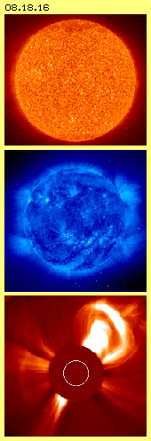
Unser Bild von der Sonne als einer wärmenden und leuchtenden Kugel ist eine ´optische Täuschung´. In anderem ´Lichte´ (Frequenz, Temperatur, Magnetfluss) betrachtet, zeigt sie ein Bild tobender Stürme und sprühender Strahlen (siehe Bild 08.18.16). Man hat inzwischen jede Menge Daten gesammelt - aber praktisch sind noch immer alle Fragen offen. Nachfolgend sind die wichtigsten Ansatzpunkte für ein besseres Verständnis nochmals hervor gehoben. Darüber hinaus bieten einige Besonderheiten der Sonne den klaren Beweis für die Existenz des Äthers.
Geringe Masse
Wenn man keine Erklärung für die Fernwirkung einer Anziehungskraft hat, darf man die ´irdische Gravitation´ nicht auf die Sonne übertragen. Über die Masse der Erde (ausgehend von geschätzter Dichte mit 5.5 g/cm^3), ihrer Rotationsgeschwindigkeit und Distanz zur Sonne sowie der als universelle Konstante unterstellten irdischen Gravitation wird die Masse der Sonne berechnet. Durch deren Anziehungskraft sollen im Innern viele Millionen Grad Hitze und Millionen Bar Druck herrschen. Diese Gaswolke soll zu einer mittleren Dichte von 1.4 g/cm^3 komprimiert sein - während Wasserstoff und Helium unter Standard-Bedingungen zehntausendfach leichter sind - und wie alle Gase das größtmögliche Volumen einnehmen wollen.
Die Sonne hat real vielfach geringere Dichte und Masse als generell unterstellt wird. Im Gegensatz zu unserer ruhigen, festen Erde ist die Sonne eine lose Ansammlung von Gasen, ohne feste Außengrenze, aber intern in fortgesetzt heftiger Bewegung. Die Materie stellt dabei nur einen geringen Teil aller Bewegung dar, die Sonne ist primär eine ´wild-tobende´ Äther-Kugel.
Energie-Konstanz
Die gesamte Energie-Abstrahlung der Sonne ist rund 1300 W/m^2 (ein gutes Dutzend 100-W-Birnen je Quadratmeter) und ein entsprechender Anteil trifft auf der Erd-Oberfläche ein. Wie fast alle Planeten strahlt die Erde etwas mehr Energie ab (weil auch Strahlung aus anderer Richtung letztlich reflektiert wird). Im Gegensatz zu obiger Gravitation gilt das Gesetz der Energie-Konstanz unabdingbar und universumweit: auch die Sonne ´produziert´ keine Energie, sie kann letztlich nur abstrahlen was zuvor aufgenommen wurde.
Alle Himmelskörper können Energie nur ´transformieren´, je nach materiellem Aufbau in unterschiedlicher Weise. Energie ist in Himmelskörpern zwar ´verdichtet oder materialisiert´, ein Vielfaches davon stellen aber die in alle Richtungen durch das All rasenden Strahlungen dar, die vielfach überlagert das chaotisch-kleinräumige Bewegungsmuster des Freien Äthers ergeben.
Granulen der Photosphäre
Die eintreffende Strahlung in Verbindung mit dem universellen Äther-Druck schiebt die Wasserstoff-Atome auf der Sonnenoberfläche zusammen. Es kommt dabei zu obigen Mehrfachkollisionen mit der Differenzierung schneller und langsamer Atome. Es kommt zu ´Hitze-Blasen´ nicht erst in ein paar 100000 km Tiefe, sondern z.B. schon nach 1000 km. Es gibt periodische Schwingungen in der Sonne, aber offensichtlich auch spontane gravierende Erschütterungen. Beides führt zu Dichteschwankungen und an den jeweiligen Grenzen dieser ´Kavitations-Blasen´ kommt es zur oben beschriebenen Implosion. Die nachfolgende Explosion kann durch ´Risse´ nach außen entweichen. Bei Temperaturen von etwa 6000 Grad kollidieren Partikel und geben das sichtbare Licht der ´Photosphäre´ ab. Die Partikel verlieren dabei an Geschwindigkeit und sinken rund um die ´Eruptions-Quelle´ wieder ab, bei rund 4000 Grad. Nachdem der Druck in der Blase entwichen ist, ´verstopft´ der Kanal wieder. Diese Konvektions-Wolken der ´Granulen´ erreichen 1000 km Durchmesser und werden nach wenigen Minuten durch benachbarte Eruptionen ersetzt.
Thermodynamik
Die Einschränkungen der Thermodynamik-Gesetze sind nicht relevant: es kann durchaus eine lokale Beschleunigung der Partikel und damit Zonen von Hitze und Kälte geben. Das vermeintliche Gesetz der Entropie wird in aller Natur widerlegt: es wird nicht alles immer gleichförmiger, es bilden sich pausenlos neue und komplexe Strukturen. Die vorigen Granulen verändern ihre Struktur pausenlos, sie sind insgesamt aber eine beständige Erscheinung. Die Ausbrüche der Korona sind weniger regelmäßig, aber um so heftiger. Sie müssen darum ´tiefere´ Ursache haben.
Die Sonne wird nicht als Supernova enden, wohl aber kann es zur oben geschilderten Konzentration extrem schneller Partikel und zur Wasserstoff-Helium-Fusion kommen. Offensichtlich gibt es die damit verbundene Implosion nicht nur ein mal im Zentrum, weil es Korona-Ausbrüche unregelmäßig an wechselnden Orten mit unterschiedlicher Intensität gibt. Die extreme Verspannung des Äthers entlädt sich in explosiven Vorgängen. Es kann Stunden oder Tage dauern, bis der Druck in diesen Blasen so weit reduziert ist, dass sich der Kanal wieder schließt.
Diese Kanäle wirken wie Engpässe bzw. Düsen, so dass dort nochmals größere Geschwindigkeiten entstehen. In dieser Mischung aus materiellen Partikeln und Strahlung könnte sehr wohl die Fusion zu noch schwereren Elementen statt finden. Andererseits werden dort gewiss auch komplexe Atome ´aufgerieben´. Trotz aller chaotischen Bewegungen wird es in diesen Kanälen auch zu geordneten Strömungen kommen, weil im Äther alle benachbarten Bewegungen synchron oder einigermaßen analog zueinander statt finden müssen. Diese Ordnung ergibt z.B. obige Magnetfeld-Linien - hier in gigantischem Maßstab, z.B. vielfach größer als die Erde.
Diese ´Magnet-Röhren´ werden durch Bewegungsmuster im Äther gebildet. Durch diese ´aetherische´ Röhre hindurch rast eine Mixtur aus ´materiellen´ Partikeln, Elektronen und Photonen. Meist sind die Röhren gekrümmt und bilden Bogen zurück in die Oberfläche. Der Auswurf kann auch großflächige ´Flares´ bilden, die erst nach Tagen oder Wochen wieder auf die Oberfläche zurück treiben. Praktisch immer reicht ein radialer Strahlenkranz weit über die sichtbare Grenze der Sonne hinaus. Die Sonne ist generell ein ´offenes System´, was die Einstrahlung wie Abstrahlung von Energie anlangt, und nur unter diesen Einschränkungen sind die thermodynamischen Prozesse zu bewerten.
Fließender Übergang
Diese davon fliegenden Bewegungsmuster werden ´Sonnen-Wind´ genannt, der bis weit über die äußeren Planeten hinaus reicht. Diese ´Strömung´ ist nicht gleichförmig, sondern von wechselnder Stärke, eher vergleichbar mit Sturmböen der Luft. Die Sonne arbeitet nicht wie ein Radiosender mit einer konstanten ´Trägerfrequenz´, sondern sendet eine Mixtur einzelner ´Photonen´ unterschiedlicher Länge und Amplitude. Diese Schwingungsmuster winden sich als Spiralen mit nur einer Umdrehung mit Lichtgeschwindigkeit verlustfrei durch den Äther. Die sich windende Krümmung rast entlang einer ´Stahlstange´, wie bei obigem Beispiel der Verbindungslinien aufgezeigt wurde. Die Photonen sind aber weit größer als gemeinhin unterstellt wird, weil immer auch seitlich benachbarter Äther involviert ist.
Darum interagieren diese Bewegungs-Elemente miteinander und man redet von ´hoch energetischer Strahlung´. Ein Elektron basiert prinzipiell ebenfalls auf dieser spiraligen Bewegung, allerdings sind zwei davon zu einer Doppelkurbel vereint. Es ist ein fließender Übergang denkbar von vorigem ´dicken Photonen-Cluster´ zu einem ´hochenergetisierten Elektron´ - das auch als Bestandteil kosmischer Strahlung genannt wird. Diese Bewegungseinheiten haben natürlich auch eine größere Aura, sie weisen gegenüber anderer Strahlung eine ´sperrige Masse´ auf. Bei Kollisionen werden sie abgebremst, so dass der Sonnenwind nicht mit Lichtgeschwindigkeit, sondern maximal mit 1000 km/s unterwegs ist.
Diese schwingenden Doppelkurbeln sind auch die Basis aller Atome. Das einfachste entspricht praktisch einem Elektron, das allerdings - z.B. durch Kollision mit ´Hochenergie-Partikeln kosmischer Strahlung´ - eine asymmetrische Struktur erhielt. Sein ungleichförmiges Schwingen erfordert eine größere, ´sperrigere´ Aura, woraus seine höhere ´Masse´ resultiert. Es ist also durchaus ein fließender Übergang von Strahlung zum materiellen Partikel des Wasserstoffs gegeben. Beide basieren im Prinzip auf dem gleichen Bewegungsmuster, und auch die komplexeren Atome unterscheiden sich nur in der Anzahl und Anordnung solcher Wirbel.
Heiße Chromosphäre
Angeblich verliert die Sonne jede Sekunde eine Million Tonnen Masse durch den Sonnenwind. Mehrere Satelliten zeigen fortlaufend Bilder mit dem Auswurf von Materie und davon jagender Strahlung. Das sichtbare Licht wird in der 6000 bis 4000 Grad heißen Photosphäre erzeugt. Sehr viel weniger Materie befindet sich in der darüber befindlichen Chromosphäre - die ein bis zwei Millionen Grad heiß sein soll. Es gibt bislang keinerlei Erklärung für diesen Anstieg der Temperatur. Ich vermute, man hat schlicht und einfach vergessen, dass Energie-Konstanz herrscht: die Sonne schleudert nicht nur Materie und Strahlung von sich - sondern empfängt Energie in etwa gleichem Umfang.
Der Materie- und ´Photonen´-Strom der Sonne ergibt sich aus Kanälen mit Düsen-Effekt bzw. wird aus ´pulsierenden Ventilen´ hinaus geschleudert mit überhöhter Geschwindigkeit. In den Magnet-Röhren werden Strömungen gebündelt und es kommt schon dort zur Ausbildung obiger ´hoch-energetisierter Partikel und Strahlung´. Dieser entgegen steht kosmischer Wind und Strahlung aus allen Richtungen des Alls. Diese ´groben´ Bewegungsmuster laufen nicht einfach durch einander hindurch (wie normale elektromagnetische Wellen). Alles Grob-Stoffliche wird in dieser ´Kreuz-See´ hin und her geworfen - was als Temperatur von Millionen Grad interpretiert wird. Im Strahlenkranz der Sonne wird Materie sichtbar - aber keinesfalls all diese Atome verlassen die Sonne. Im Gegenteil können in diesem aufgewühlten Äther sogar neue Elektronen und Wasserstoff entstehen, der als neue Materie zur Oberfläche sinkt.
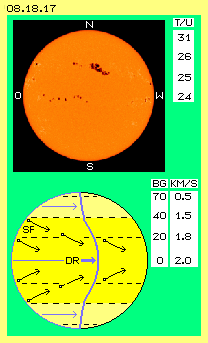
Sonnenflecken und Rotations-Divergenz
Auf der sichtbaren Oberfläche der Sonne sind dunkle Bereiche zu erkennen, wie Bild 08.18.17 oben zeigt. Diese Sonnenflecken entstehen sporadisch und lösen sich nach wenigen Tagen oder Wochen wieder auf. Diese Bereiche werden in Verbindung gebracht mit besonders starken magnetischen Erscheinungen. Sie sind ein Indiz für die ´Sonnen-Aktivität´, welche stärker und schwächer wird in Perioden von etwa elf Jahren. Diese Flecken treten nördlich und südlich vom Äquator auf, jeweils im Bereich zwischen 40 und 5 Grad Breite. Sie wandern von Ost (wo die Sonne zur Erde her dreht) nach West und etwas zum Äquator hin. In diesem Bild unten sind einige Sonnenflecken (SF, schwarze Punkte) eingezeichnet und ihre Zug-Richtungen sind schematisch skizziert (siehe Pfeile).
Seltsamerweise wandern die Sonnenflecken nicht gleichförmig vorwärts. Die Sonne rotiert nicht wie eine feste Kugel. Aus der Wanderung der Sonnenflecken wurde die ´differenzielle Rotation´ abgeleitet. Unterschiedliche Daten werden in der Literatur genannt, hier sind Mittelwerte dargestellt. Danach führt die Sonnen-Oberfläche am Äquator eine Umdrehung binnen 24 Tagen aus (Spalte T/U), was einer Geschwindigkeit von etwa 2 km/s entspricht (Spalte KM/S). Auf 20 Grad Breite (Spalte BG) dauert die Umdrehung einen Tag länger (was an diesem Radius etwa 1.8 km/s entspricht). Auf 40 Grad Breite dreht die Oberfläche nochmals um einen Tag langsamer (also binnen 26 Tagen bzw. mit etwa 1.5 km/s Geschwindigkeit). Auf einer Breite von 70 Grad kann die Rotation ganze 31 Tage dauern (und die dortige Oberfläche bewegt sich mit nurmehr 0.5 km/s im Kreis herum).
In diesem Bild ist der Längengrad ganz links blau markiert. Wenn sich eine feste Kugel um 90 Grad dreht, würde dieser Längengrad mittig auf der Kugel erscheinen. Durch die differenzielle Rotation (siehe blauen Pfeil DR) ist diese Linie auf der Sonnen-Oberfläche am Äquator nach rechts verschoben (siehe blaue Kurve).
Schon seit ein paar tausend Jahren ist die Erscheinung der Sonnenflecken bekannt. Seit ein paar hundert Jahren verfolgt man exakt deren Häufigkeit und Wanderung. Bis heute aber kann die Physik keine Erklärung für diese Rotations-Divergenz geben. Es ist nicht zu erklären, wie ein langsam drehender Kern die äußeren Bereiche zu schnellerer Drehung veranlassen könnte. Eventuell wäre denkbar, dass eine äußere schnelle Drehung durch einen Kern abgebremst würde. Aber dann käme die ganze Rotation zum Stillstand - oder die Sterne (bzw. auf jeden Fall die Sonne) müssten einen Antrieb von außen erfahren. Solange man die Sonne umgeben glaubt von ´Nichts´ wird man keine Lösung dieser Problematik finden. Wenn man die Sonne im Zentrum eines substanziellen Äther-Whirlpools sieht, ist die Erscheinung einfach zu erklären.
Äther-Potentialwirbel des Sonnensystems
In Bild 08.18.18 ist oben links die differenzielle Rotation (DR, gelb) der Sonne als Graph dargestellt: In der Senkrechten sind die jeweiligen Rotationsgeschwindigkeiten (KM/S) abgetragen, in der Waagerechten die Distanz (MKM). Die Sonne weist am Äquator einen Radius von rund 0.7 Millionen Kilometer auf und dreht dort mit einer Geschwindigkeit von etwa 2.0 km/s. Von innen nach außen steigt die Geschwindigkeit progressiv an. Darum ist zu erwarten, dass der Äther außerhalb eine nochmals schnellere ´Strömung´ aufweist. Beispielsweise könnte in 2 bis 3 Millionen km Entfernung der Whirlpool (WP, grün markiert) mit 40 oder 50 km/s drehen.
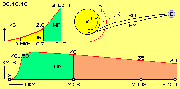
Unten in diesem Bild sind die inneren Planeten eingezeichnet. Von der Sonne S in etwa 58 Millionen Kilometer (MKM) Entfernung dreht Merkur M seine Runden. Die Venus V rotiert am Radius von etwa 108 Mkm und die Erde E weist eine mittlere Entfernung von rund 150 Mkm zur Sonne auf. Die Erde bewegt sich auf ihrer Kreisbahn mit etwa 30 km/s, die Venus mit etwa 35 km/s und Merkur mit durchschnittlich 48 km/s. Die Umlaufzeit der Planeten ist nach innen immer kürzer, aber nicht proportional. Vielmehr fliegen die inneren Planeten jeweils schneller durch den Raum (siehe den rot markierten Bereich).
Es ist sehr wahrscheinlich, dass der Whirlpool (WP, grün) innerhalb des Merkurs nochmals schneller dreht. Die Kurve dieser Geschwindigkeiten und obige Kurve der differenziellen Rotation der Sonne müssen einen fließenden Übergang aufweisen. Dieser ist gegeben, wenn bei etwa 2 bis 3 Mkm die Geschwindigkeit von 40 bis 50 km/s (also etwa wie beim Merkur) wieder erreicht wird. Anhand der Flugbahnen von Kometen oder Sonden könnte ermittelt werden, welches Maximum dort tatsächlich erreicht wird. Vermutlich werden sich die Geschwindigkeiten ähnlich wie bei einem Wirbelsturm verhalten: von außen nach innen ansteigend, zunehmend progressiv mit einem Maximum, das erst kurz vor dem Zentrum rasch abfallend ist.
Ablenkung des Lichts und Sonnenwinds
Dieses Bild 08.18.18 zeigt oben rechts die Sonne (S, gelb) und die Erde (E, blau). Die links-drehende, differenzielle Rotation der Sonne ist mit Pfeil DR angezeigt. Der Whirlpool des Äthers außerhalb der Sonne weist eine sehr viel schnellere Drehung auf, wie angezeigt ist durch den längeren Pfeil WP.
Das Bewegungsmuster des Lichts bzw. aller elektromagnetischen Strahlung wandern mit 300000 km/s durch den Raum. Die 150 Millionen Kilometer von der Sonne zur Erde wird binnen 8 Minuten zurück gelegt. Generell werden ´Photonen´ bzw. elektromagnetische Strahlung durch die schlagende Komponente des Whirlpools seitlich versetzt (siehe gekrümmte Linie EM). Wir sehen also generell die Sonne etwas zu weit rechts.
Die ´gröberen´ Bewegungsmuster des Sonnenwindes sind mit 300 bis maximal 1000 km/s unterwegs. Sie kommen erst nach etwa 40 bis 140 Stunden auf der Erde an (also etwa 1.7 bis 5.7 Tage später). Die ´energetisierten Partikel´ fliegen in ´magnetischen Röhren´ spiralig zur Erde (siehe z.B. Kapitel ´08.14. Röhren, Flächen, Membranen´). Der Sonnenwind ist wesentlich länger der schnellen Strömung des Whirlpools ausgesetzt und wird sehr viel stärker abgelenkt (siehe starke Krümmung der Kurve SW).
Auswirkungen der Sonnenflecken
Das Erscheinen von Sonnenflecken bewirkt verstärkten Sonnenwind, z.B. auch Störungen im Funkverkehr. Diverse Beobachter haben über Jahrzehnte das Erscheinen von Sonnenflecken und gravierender Ereignisse auf der Erde aufgelistet und eine klare Korrelation festgestellt: ´mysteriöse´ Flugzeug-Abstürze ereignen sich nach einem bis zwei Tagen und starke Erdbeben bis zu fünf Tage später - nach Erscheinen von Sonnenflecken am linken Rand (nicht aber, wenn diese erst mittig oder am rechten Rand erscheinen). Das ist nach herkömmlichem Verständnis physikalisch nicht zu erklären.
Bereits bevor ein Sonnenfleck SF am linken Rand sichtbar wird, werden seine magnetischen Stürme bereits im Drehsinn des Systems nach vorn umgelenkt. Auf stark gekrümmter Bahn erreicht der Sonnenwind SW die Erde. Wenn der Sonnenfleck mittig auf der Sonnenscheibe zu sehen ist, wird der von dort ausgehende Sonnenwind so weit nach vorn verfrachtet, dass er die Erde nicht mehr erreicht (siehe gestrichelte Kurve mit Pfeil).
Nur die Sonnenflecken am linken Rand oder im linken Bereich der Sonne haben somit gravierenden Einfluss auf die Erde (und besonders auf Satelliten). Dieser Sachverhalt ist nur zu erklären, wenn unterstellt wird, dass sich die Sonne im Zentrum eines Wirbels aus realem Äther befindet und kurz außerhalb der Sonnen-Oberfläche dieser Whirlpool besonders schnell dreht. Durch Beobachtung der Ereignisse auf der Sonne und der Dauer ihrer Auswirkungen auf der Erde, könnte man ziemlich exakt die ´differenzielle Rotation´ der Äther-Bewegungen auch in diesem äußeren Bereich ermitteln.
Stürmisches Whirlpool-Zentrum
Von den äußeren Planeten bis zur Sonne, über viele hundert Millionen Kilometer, bewegt sich der Whirlpool ´gesetzmäßig´ als Potentialwirbel. Die inneren Bereiche jedoch sind turbulenter. Die Achse der Venus liegt anders als bei den übrigen Planeten. Der Merkur hat eine extrem exzentrische Bahn mit großer Neigung zur Ekliptik, die starke Variation seiner Geschwindigkeit widerspricht den keplerschen Gesetzen. Weiter nach innen muss der Whirlpool noch schneller drehen. Seine Ebene muss gekippt sein, weil der Äquator der Sonne um sieben Grad geneigt ist gegenüber der Ekliptik. Möglicherweise steht die Sonne nicht genau im Zentrum des Wirbelsystems.
Der Äther-Potentialwirbel der Erde hat einen Radius von etwa einer Million Kilometer. Die starre Erde zwingt den inneren Bereich ihres Whirlpools in die Bewegungsform eines starren Wirbels (minimal bis zu den geostationären Satelliten, maximal bis zur Magnetopause). Dagegen ist die Sonne eine lose Ansammlung von Gas-Partikeln und diese ´Wolke´ ist intern beweglich. Insofern kann der Äther-Whirlpool der Sonne eine hohe Drehgeschwindigkeit bis fast ins Zentrum aufweisen. Das Herunter-Bremsen reicht bis in die (sichtbare) Sonnen-Kugel hinein, wie die Rotations-Divergenz klar aufzeigt.
Die Brems-Wirkung kommt zustande, weil die Atome im Zentrum der Sonne extrem schnell umher fliegen und bei Kollisionen der Äther dazwischen bis an die Belastungsgrenzen gebeugt wird. Bei der notwendigen Entspannung wird Strahlung generiert, die kreuz und quer durch die Atome fliegt. Es kommt zu lawinenartig ansteigendem Schlagen der Ätherbewegungen bis hin zu den Eruptionen an der Sonnen-Oberfläche. Diese ´chaotischen´ Äther-Bewegungen beeinträchtigen natürlich die Gleichförmigkeit eines ´geordneten´ Whirlpools.
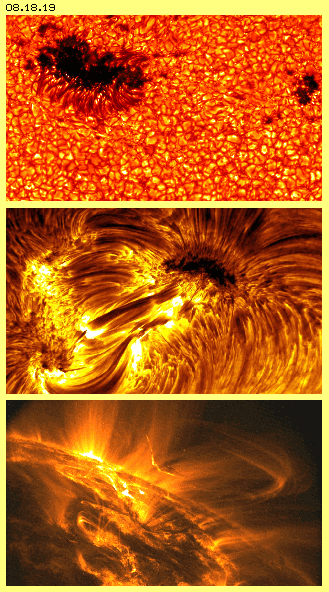
Der Ekliptik-Whirlpool wird also tatsächlich durch das Sonnen-Zentrum abgebremst. Andererseits wird bereits die Sonnen-Oberfläche wieder angetrieben durch die schnelle Dreh-Geschwindigkeit zwischen Merkur und Sonne. Natürlich sind die Bewegungen im Zentrum eines Wirbels am heftigsten und weil die zentrale Kugel nur aus Gas besteht, können darin virtuose Bewegungen aufkommen.
Die ´Masse´ des gesamten Systems soll zu 99 % in der Sonnen konzentriert sein. Es muss ihr so viel Materie zugerechnet werden, damit sie ausreichend Masse-Anziehungskraft herkömmlichen Verständnisses aufbringen könnte. Materie ist letztlich Bewegung von Äther im Äther und kann insofern gleich gesetzt werden mit ´Energie´. Die kinetische Energie des Sonnen-Systems insgesamt sind alle Bewegungen allen Äthers dieses Lichtjahre großen Whirlpools. Dagegen ist die Sonne tatsächlich nur ein Staubkorn und ihr ´Bewegungs-Volumen´ nahezu unbedeutend gering. Es ist also unerheblich, wenn im Zentrum ein paar Gas-Partikel nicht ganz synchron mit dem System drehen.
Äther in Aufruhr
Erst wenn eine Gas-Ansammlung eine bestimmte Größe erreicht, ´zündet´ ein Stern. Die Gas-Partikel sind in ständiger Bewegung und kollidieren fortwährend. Es kommt zu Mehrfach-Kollisionen, im Prinzip immer radial einwärts. Daraus erst ergibt sich die Differenzierung der Geschwindigkeiten mit einer relativ kalten Schicht außen und ´Hitze-Blasen´ weiter einwärts. Die Kollisionen zwischen diesen ´überschnellen´ Partikeln bewirken ´Stress´ im Äther, der sich nur durch eruptive Bewegungen abbauen lässt.
Die Satelliten zur Beobachtung der Sonne liefern praktisch ´live´ höchst eindrucksvolle Bilder, wie z.B. in Bild 08.18.19 wiedergegeben ist. Die ´normale´ Entlastung erfolgt durch kleine und kurzfristige Eruptionen und diese Granulen lassen die sichtbare Oberfläche genarbt erscheinen. Die dunklen Ränder der Granulen werden durch abgekühlte und wieder absinkende Partikel gebildet.
Wenn ein Eruptions-Kanal längere Zeit offen bleibt, werden die Äther-Strömungen großflächiger und ordnen sich zu Magnet-Linien bzw. großen Magnet-Röhren. In diesen wird Materie hoch getragen und sie erscheinen hell, solange durch Kollisionen das Licht abgestrahlt wird. Dabei kühlt sich das Gas ab und die Partikel sinken zurück. Es entsteht dabei eine weiträumige Umwälzung. Die große Eruption sorgt für Entlastung, so dass andere Ausbrüche erst in einiger Entfernung auftreten. Dazwischen kann sich ein großer Bereich ergeben (größer als die Erde), in welchen gemeinsam die abgekühlten Partikel absinken. Das sind die Sonnen-Flecken, die relativ kühles Gas anzeigen bzw. einen Blick auf die ´kalte´ Gas-Schicht bieten. Die Magnet-Röhren sind meist gekrümmt und es kann durchaus eine komplette Magnet-Röhre in einen zweiten Sonnen-Fleck ´hinein fallen´.
Auch die Erde ist von einer Gas-Schicht umgeben. Dort findet Erwärmung und Abkühlung statt, variiert die Dichte und es ergeben sich entsprechende Luftbewegungen. Allerdings zeigt Bild 08.18.19 Bewegungen, die nicht vergleichbar sind mit dem ´Wetter´ der irdischen Atmosphäre. Das absolut Primäre sind dort die Äther-Bewegungen, in Form explosiver Entspannung des internen Stresses. Die Bewegungen werden sichtbar, wenn Gas-Partikel mit gerissen werden.
Die virtuosen Bewegungen bilden nur teilweise solche Muster, die man ´elektromagnetisch´ nennen könnte (und das Universum funktioniert nicht ´elektrisch´, es gibt noch nicht einmal Anziehung ungleichnamiger Pole, siehe Kapitel ´08.15. Normale und Paranormale Erscheinungen´). Die schlagenden Bewegungskomponenten des Äthers müssen konform zueinander verlaufen. Daraus resultieren automatisch flächige Wellen-Muster, die sich zu Röhren verdrallen. Das ergibt dann Bewegungsmuster vergleichbar zu Magnet-Feldlinien. Aber auch dort finden sich Röhren nur zufällig zusammen bei passendem Drehsinn. Die Sonne funktioniert nicht aufgrund vermeintlicher Anziehungs- oder Abstoßungs-Kräfte ´magnetischer Dipole´.
Diese Fotos lassen erahnen, wie schwierig es ist, diese Bewegungsprozesse auch nur zutreffend zu beschreiben. Nur ausgehend von der realen Existenz einer realen Äther-Substanz besteht die Chance, das Geschehen einigermaßen verstehen zu können. Ansatzpunkte hierfür habe ich hiermit geliefert.
Evert / 30-09-2010